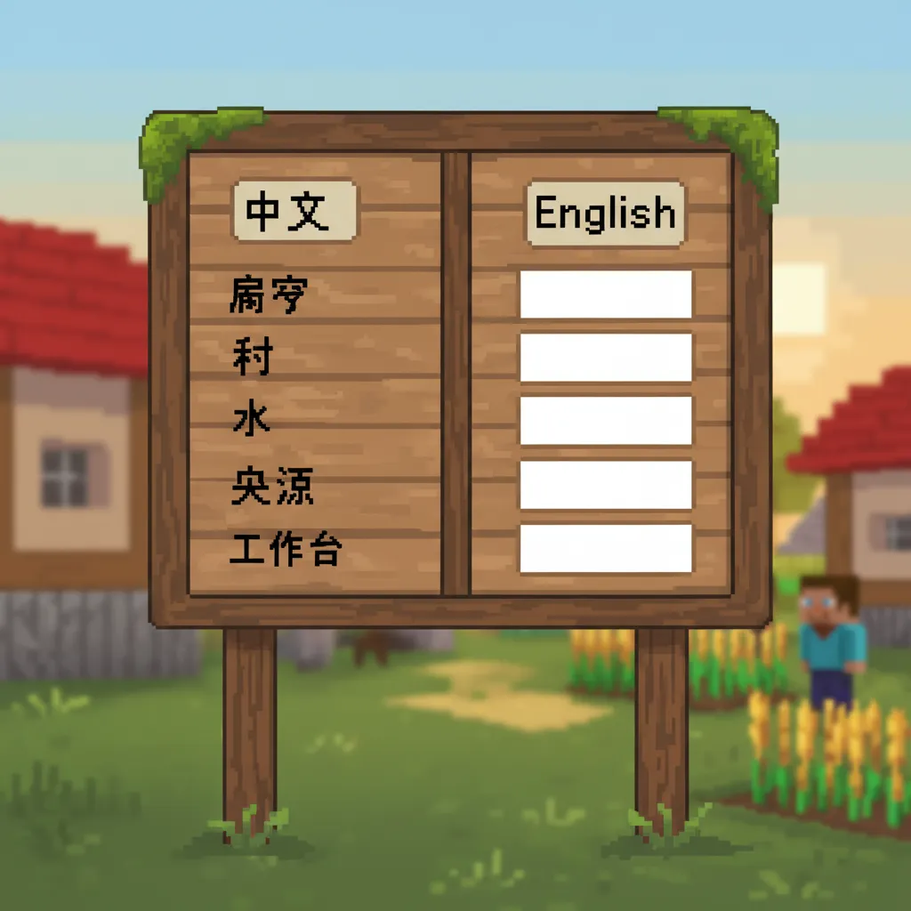
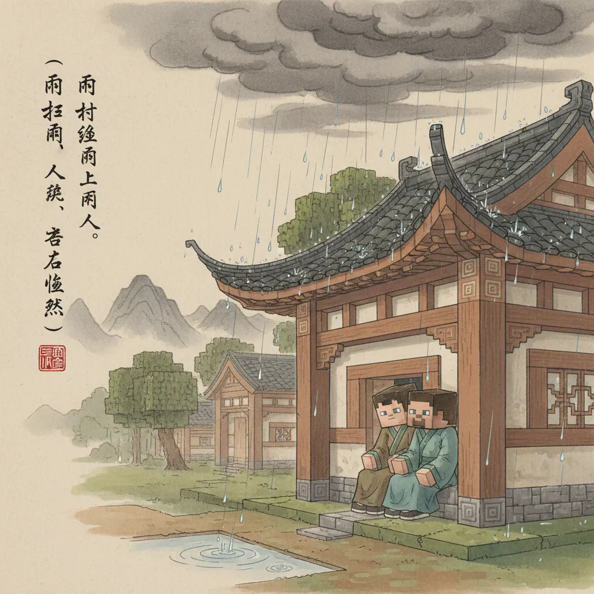
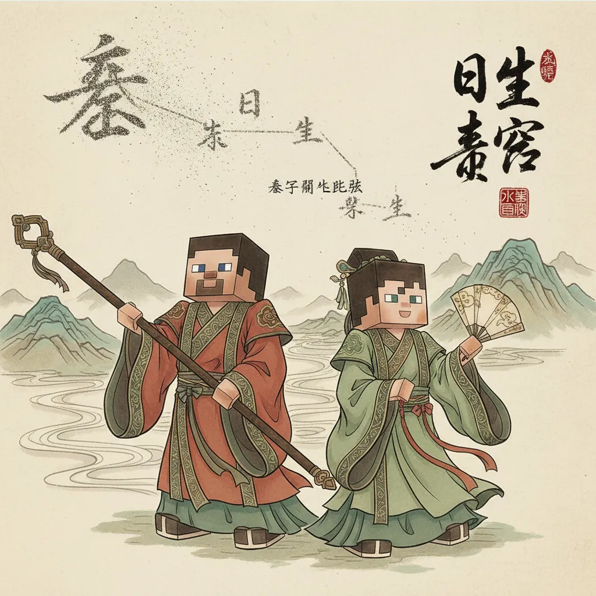
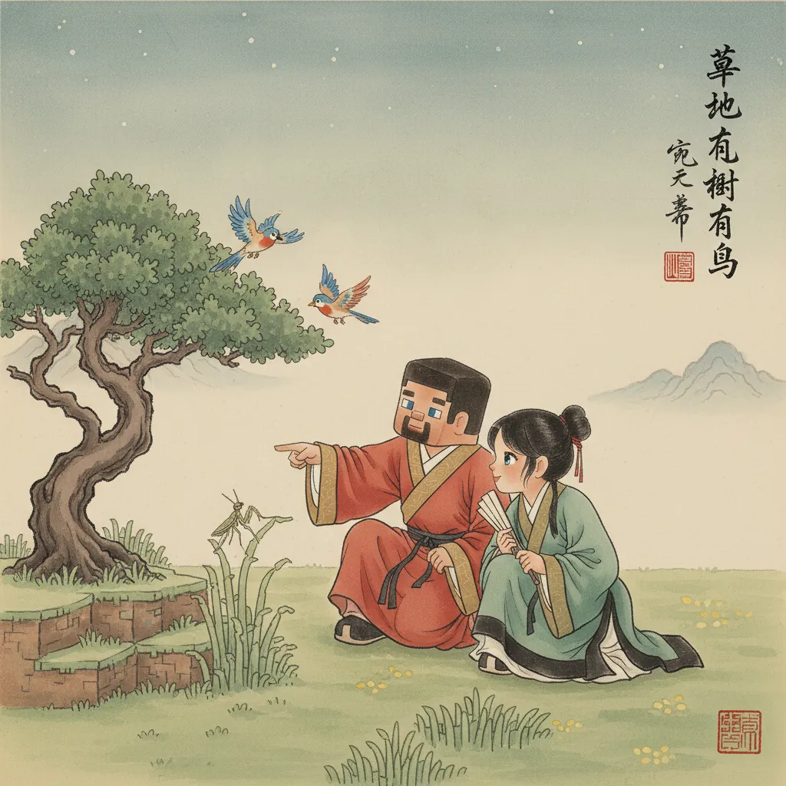

🌿 大自然
和Steve、Alex一起认识大自然
⛏️ Minecraft方块世界
☁️🌧️🌬️❄️⭐🌸🌿🐛🐦
认识9个新字：云雨风雪星花草虫鸟
Steve和Alex在村庄安顿下来。
第二天一早出门干活——
天空怎么在变？

刚才还是蓝蓝的天，突然飘来一团团白色的东西。
看，那是 云！
"二"字上面加个"厶"——天上的棉花糖

云越来越黑。
"啪！"一滴水掉在Steve头上。
哗啦啦——大雨来了！

这是 雨！快躲起来！
像一扇窗，里面有雨滴

雨停了。呼呼——
突然来了一阵大风，
把Alex的帽子吹飞了！

好大的 风！追我的帽子！

天冷了，"阿嚏！"
天空飘下白白的小东西——雪！
傍晚来临，风雪停了。
Steve和Alex坐在山坡上，
仰头看天。

天上好多小灯！
那是 星星！一颗、两颗、三颗……
上面"日"是太阳，下面"生"是出生——太阳生的小光点

太阳出来了！
昨天的雨水让大地长出很多新生命。

看！开了好多 花！
旁边一大片是 草。

草丛里有动静！
"叽叽叽——"
一只小虫爬出来。

虫在地上爬，
鸟在天上飞！

🌟 大自然的宝藏 🌟

🎯 字卡复习

👆 点击卡片听发音
🎯 小测验
📜 古诗角 · 《风》
唐·李峤
风看不见，但诗里处处都有风～